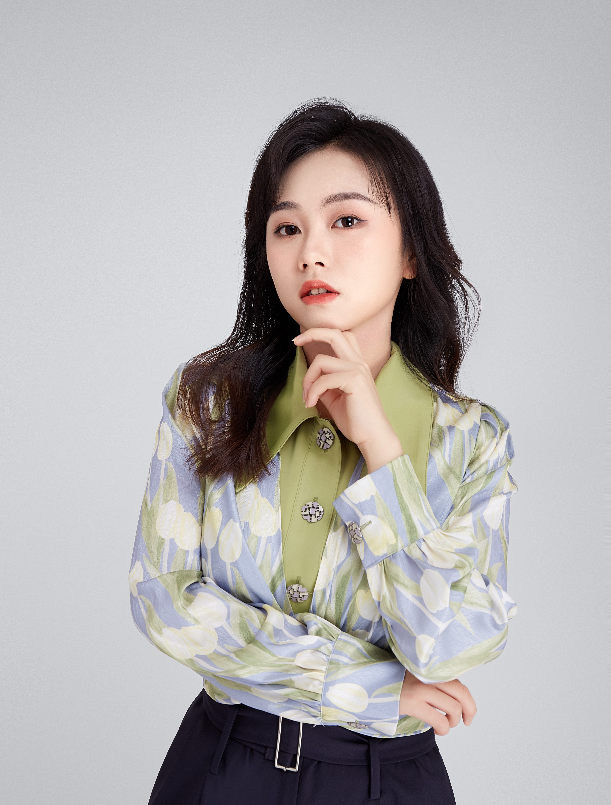

Xingyi Li
Dongguan, China | +86 13631751066 | 1062887552@qq.com
EDUCATION
Guangxi Arts University Nanning, China
Bachelor of Fine Arts in Broadcasting and Hosting Arts Sept 2020 ? Jun 2024
GPA: 3.52/5
IT Skills (Software):Proficient in Adobe Audition, After Effects, Premiere (Audio and Video Editing), and Adobe Photoshop.
Hobbies: Fitness, Debating, Travelling.
HONORS & AWARDS
Outstanding Award at the 1st China Rose Cup Tax Public Welfare Advertisement Contest (2022)
Second Prize (Broadcast Category) in the 13th National Advertising Art Design Competition for College Students (Regional Level) (2021, 2022, 2023)
Excellent Award (Broadcast Category) in the 2022 National Advertising Art Design Competition for College Students (National Level) (2022)
First Prize (Broadcast Category) in the 13th National Advertising Art Design Competition for College Students (Regional Level) (2021, 2022)
Third Prize (Broadcast Category) in the 13th National Advertising Art Design Competition for College Students (Regional Level) (2022)
Third Prize in the 27th Campus Cultural and Art Festival Paper and Planning Competition, Guangxi Arts University (2022)
Excellent Newcomer Award at the Shining Voice on Pingtan: 13th Cross-Strait TV Hosting New Talent Contest by China Television Artists Association and Fujian Provincial Literary and Art Federation (2021)
First Prize in the "Youth Towards the Party, Contribution to the New Era" Exhibition at Guangxi Arts University (2021)
Third Prize in the Collective Recitation of Chinese Classics at Guangxi Arts University (2021)
Top 50 in the "I Am a New Anchor" competition at Jinan Television Station (2021)
Second Place in the Career Planning Competition at Guangxi Arts University (2021)
First Place in the Roadshow of the Public Welfare Project of the 39th CYTE¡¯s ¡°Diggers¡± Public Welfare Youth Leadership Training Camp (2021)
First Prize in the "Reasonable Debate, Enlightened Knowledge" Debate Competition at Guangxi Arts University (2020)
First Place in the Hosting Competition at Guangxi Arts University (2020)